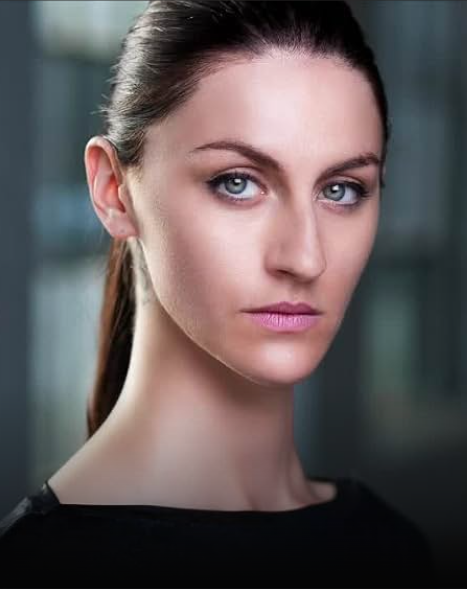

Director
Avaah Blackwell
Avaah Blackwell is a multilingual actress and versatile stunt performer. Classically trained in Europe, Blackwell began her career as a performer after graduating Prague Film School's "Acting for Film" program at the top of her class. One of ten actors globally selected for PFS's innovative program, Avaah is equally captivating performing for stage and screen. Blackwell is the co-founder of a series of industry related events entitled "Behind the Camera" at Soho House Toronto. Avaah utilizes her international training & experience to infuse her work with unique physical, emotional, and mental discipline. Versatile in her character choices, Blackwell is known best for playing strong female leads, as well as interesting supporting characters. Blackwell's performances are described as "magnetic, electric and enchanting" by producers and audiences across Europe ( Cannes Film Festival, The Bear Theatre Company), Asia (Pi Fan) and North America (TIFF, Los Angeles International Short Film Festival, New York City International Film Festival, Calgary International Film Festival, Golden Panda, Studio 35 Festival, et al.). Blackwell's exceptional comedic performance in the Winnipeg Fringe Festival earned her recognition from CBC. Blackwell's love for improvisation and comedy allows her amiable personality to shine both on and off camera. When not working on screen, Avaah can be found supporting her love for film by working for TIFF and Sundance Film Festival. She also spends her time training in acrobatics, martial arts, learning new languages and loves riding horses with her sister Mick in Alberta.